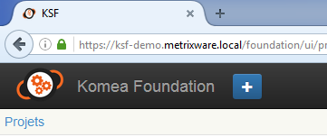
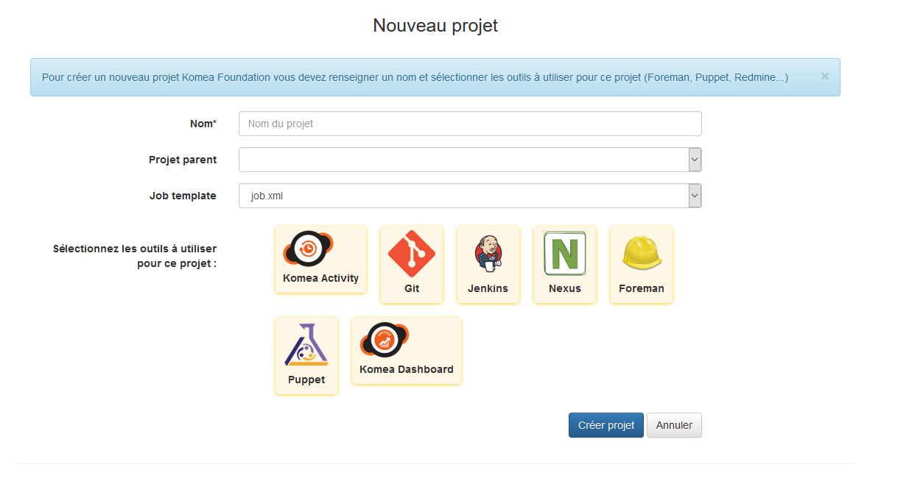
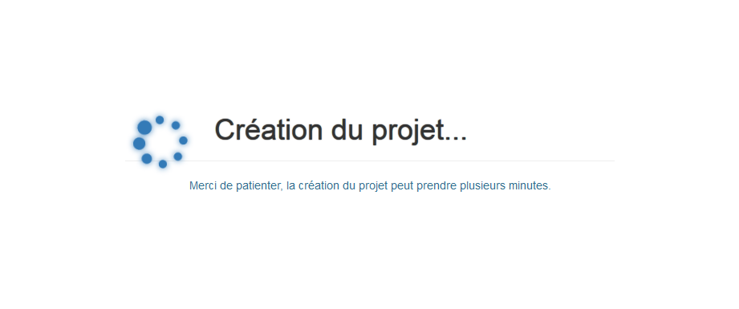
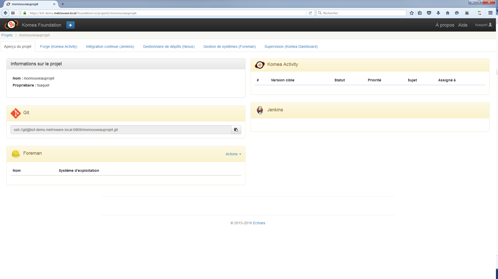
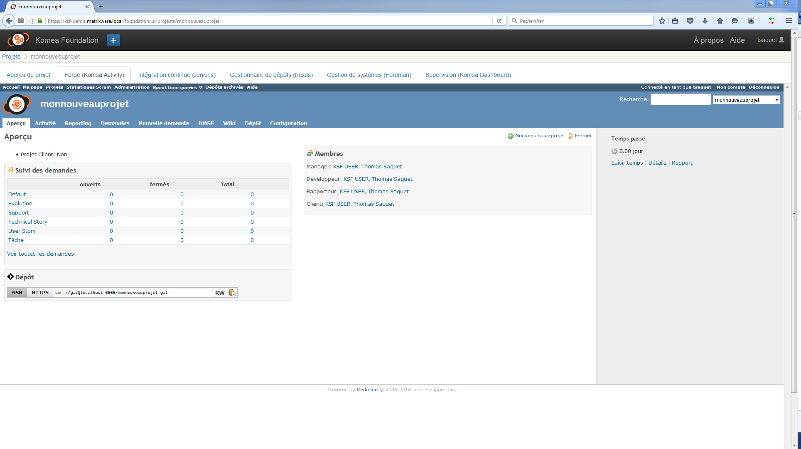
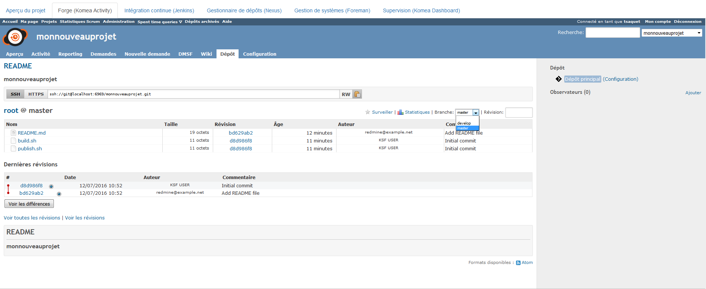
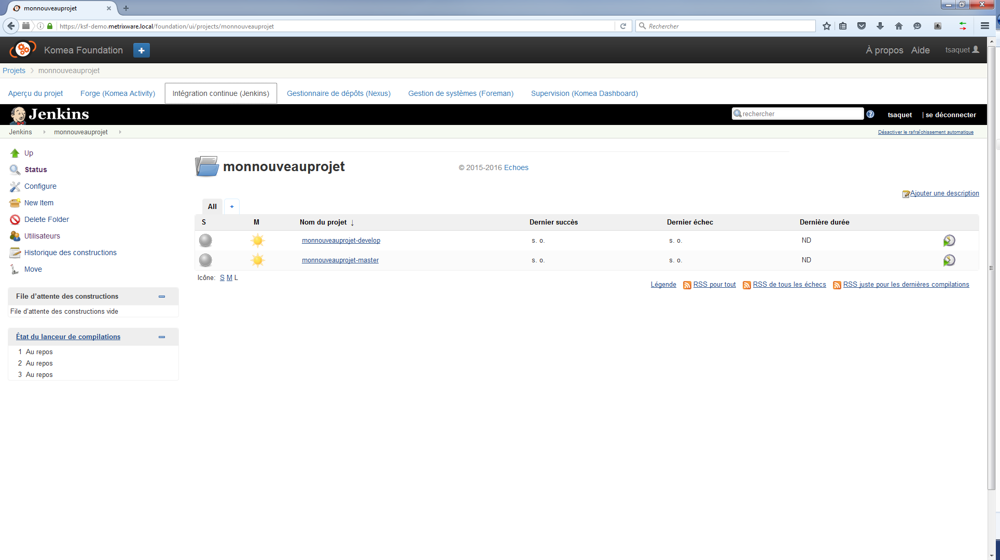
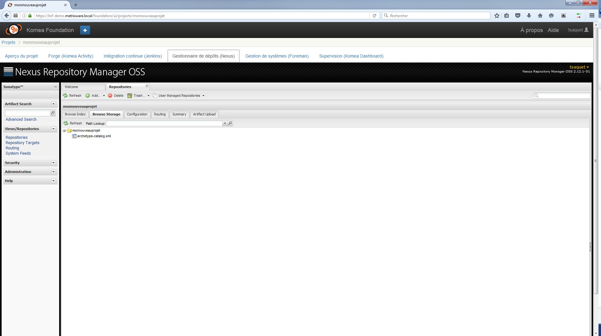
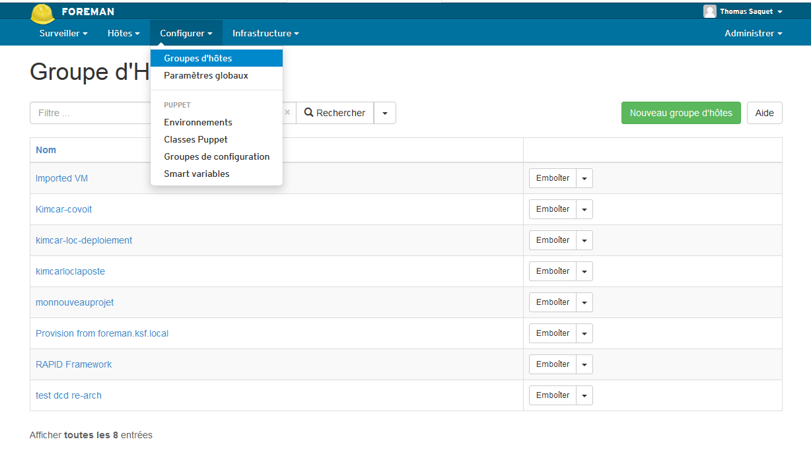
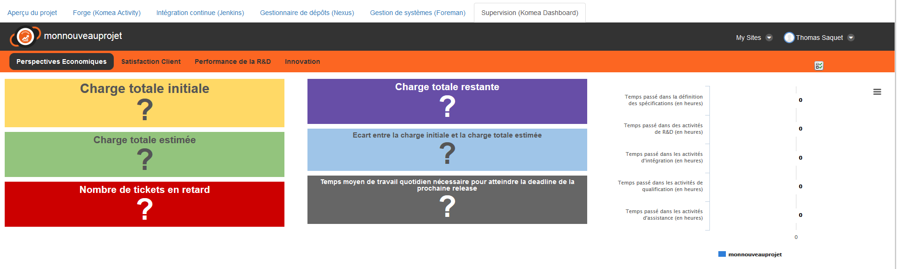

Komea Foundation permet de créer des projets de manière transverse dans les différents outils présents au sein de l’usine. Dans cette page, nous allons voir comment faire et détailler les actions effectuées automatiquement lors de la création d’un projet.
Pour créer un nouveau projet, il suffit de cliquer sur le + qui se situe en haut à gauche de l’écran.
| Nom | Type | Description |
|---|---|---|
| Nom | Chaîne | Nom du projet |
| Projet parent | Selecteur | Permet de choisir un projet parent parmi les projets existants |
| Outils | Choix multiple | Les outils actuellement disponibles sont proposés |
Voici les étapes de création :
| Etape | Description | Image |
|---|---|---|
| 1 | La page d’accueil | 
|
| 2 | Le + en image |  |
| 3 | Page de création |  |
| 4 | Page d’attente |  |
| 5 | Un nouveau projet tout neuf ! |  |
Que s’est il passé pendant ce temps ? Au moment où l’où créée un nouveau projet, Komea Foundation communique avec les différents outils pour créer les éléments nécessaires dans chacun d’eux.
| Logiciel | Eléments créés |
|---|---|
| Komea Foundation | Un projet est créé. Son identifiant est basé sur le nom donné au projet. |
| Redmine | Un projet redmine est créé. Son identifiant est basé sur le nom donné au projet. |
| Git |
|
| Jenkins | Les jobs correspondant aux branches master et develop sont créés |
| Nexus | Un dépôt pour les futurs artefacts est créé |
| Foreman | Un groupe d’hôtes est créé pour accueillir les futures VM du projet ! |
| Komea Dashboard | Les indicateurs sont pré-existants, prêts à l’emploi |
| Logiciel | Description | Image |
|---|---|---|
| Redmine | Un projet redmine est créé |  |
| Git | Un dépôt git avec les branches master et develop, ainsi qu’un fichier README.md et des éléments de configuration sont créés |  |
| Jenkins | Les jobs correspondant aux branches master et develop sont créés |  |
| Nexus | Un dépôt pour les futurs artefacts est créé |  |
| Foreman | Un groupe d’hôtes est créé pour accueillir les futures VM du projet ! |  |
| Komea Dashboard | Les indicateurs sont pré-existants, prêts à l’emploi |  |
{kind=link}
{kind=link}
{kind=link}
{kind=link}
{kind=link}
{kind=link}
{kind=link}
{kind=link}
{kind=link}
{kind=link}